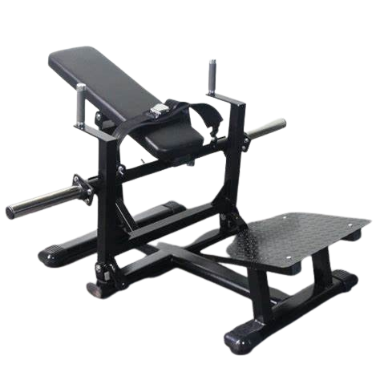
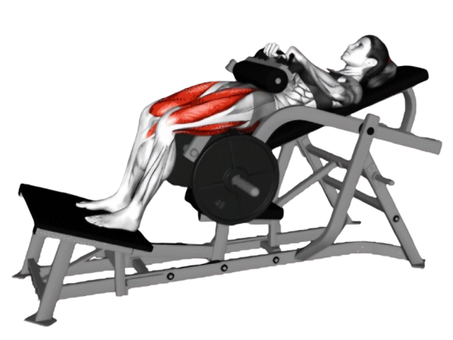
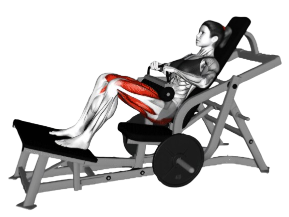

힙쓰러스트

- 벤치에 등을 기댄 상태로 앉는다. 벤치의 가장자리가 등 상부(어깨뼈 아래쪽)에 닿도록 위치를 잡는다.
- 엉덩이를 위로 밀어 올린다. 이때 발뒤꿈치로 바닥을 밀어주며, 엉덩이를 꼭 조여야 한다.
- 엉덩이와 허리가 일직선이 될 때까지 들어올리며, 1~2초 동안 유지한다.
- 이때 호흡은 뱉는다.
- 엉덩이를 바닥으로 내린다. 이때 등을 곧게 유지하고, 허리가 과도하게 구부러지지 않도록 주의한다.
- 이때 호흡은 마신다.

주의사항
- 엉덩이를 들어올릴 때 허리가 과도하게 휘어지지 않도록 주의해야 한다.
- 발의 위치는 너무 멀거나 가깝지 않게, 자신의 체형에 맞게 조정해야 한다. 발이 너무 멀리 있으면 허벅지 앞쪽에 더 많은 부하가 걸릴 수 있다.
- 지나치게 무거운 중량은 잘못된 자세를 유발할 수 있어 부상의 원인이 된다.
운동부위 및 효과
- 대둔근, 햄스트링, 척추기립근, 코어근육
- 힙 라인을 매끄럽고 탄력 있게 만드는 데 도움이 된다.
- 허리와 엉덩이의 안정성이 높아져 자세가 좋아지고, 몸의 밸런스를 개선하는 데도 효과적이다.